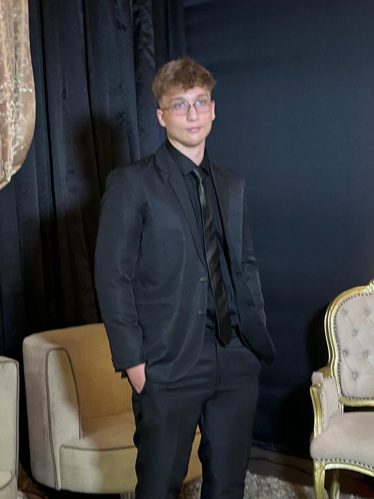
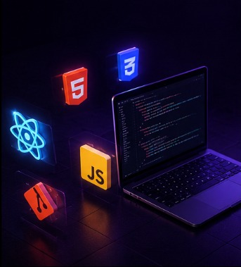

Sou desenvolvedor front-end e técnico em redes de computadores, atuando em uma provedora de internet. Desenvolvo interfaces modernas, projetos web e soluções digitais, incluindo o TapLink, meu principal projeto SaaS.

Meu foco é desenvolver interfaces limpas, responsivas e funcionais, unindo experiência com front-end e conhecimento prático em redes de computadores.
Criação de páginas modernas usando HTML, CSS, JavaScript e Bootstrap.
Experiência com provedora de internet, suporte técnico, conectividade e infraestrutura.
Projeto SaaS voltado para catálogo, pedidos, agendamentos e presença digital para negócios.

Este portifólio apresenta meus projetos hospedados no GitHub, minhas experiências com desenvolvimento front-end, automações, sistemas web e soluções aplicadas em negócios reais.
Explorar portifólio